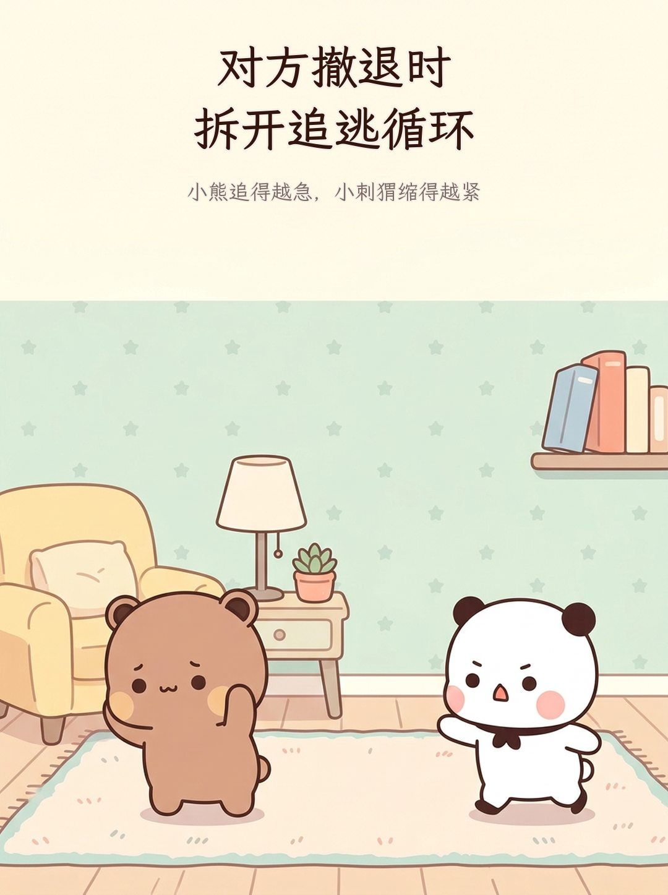
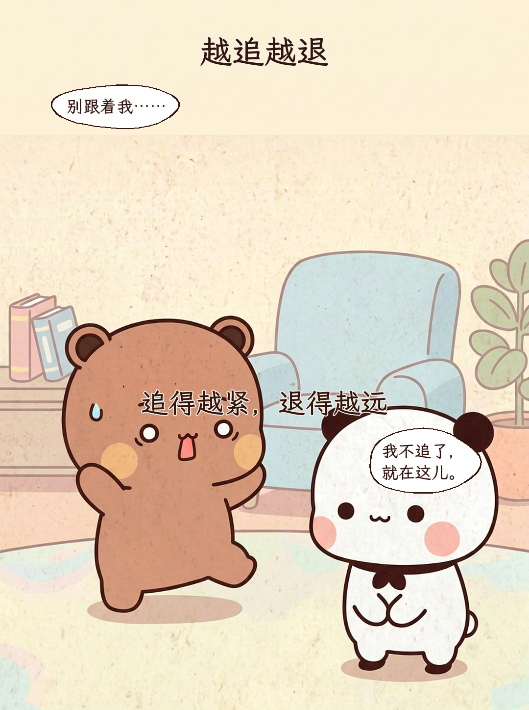
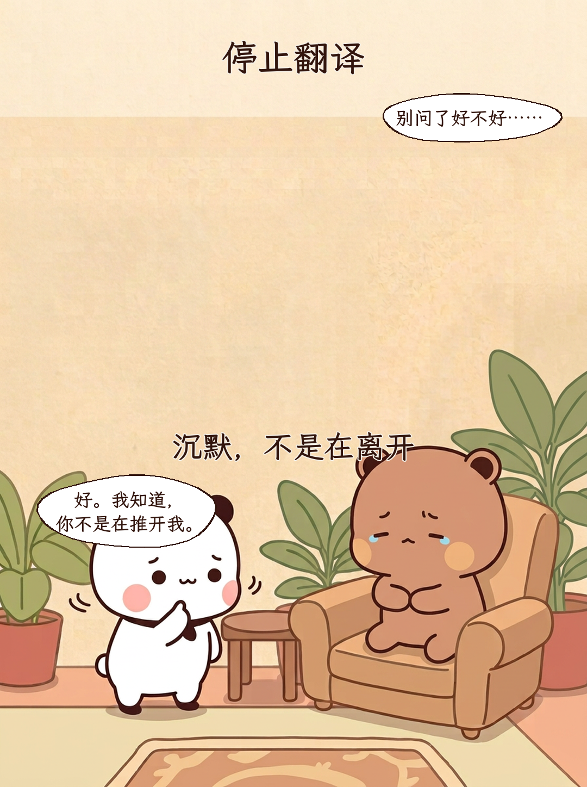
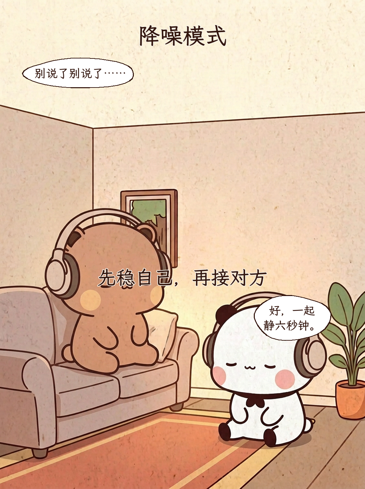
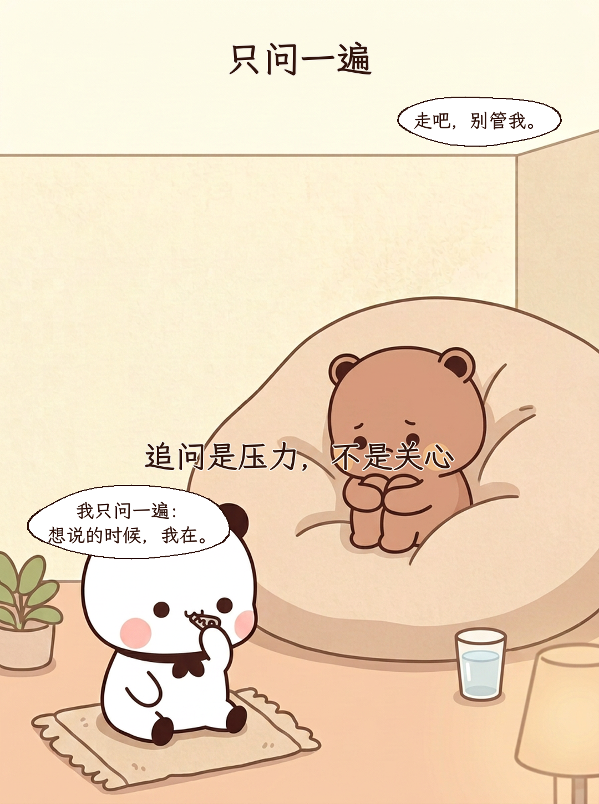
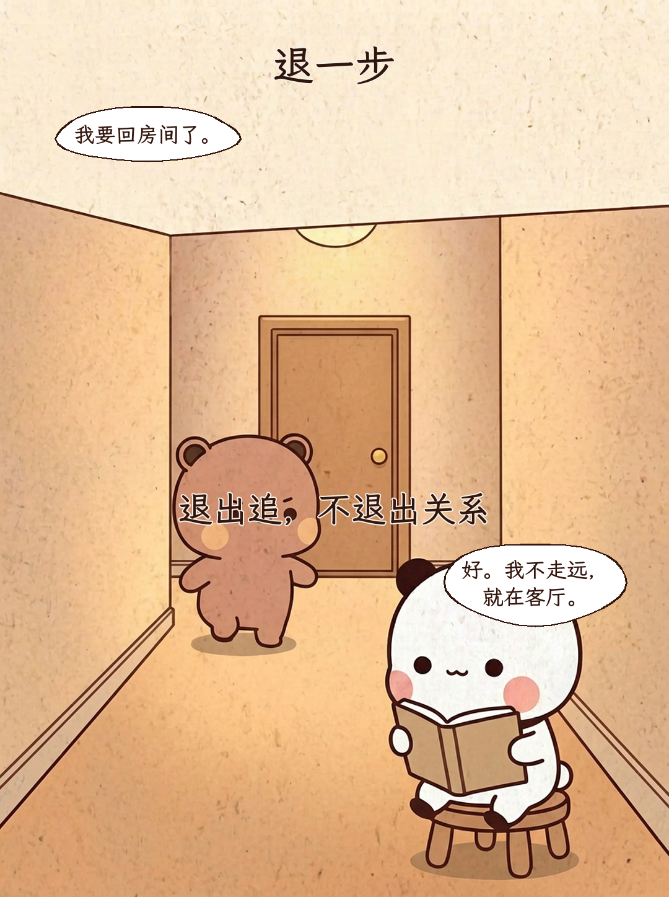
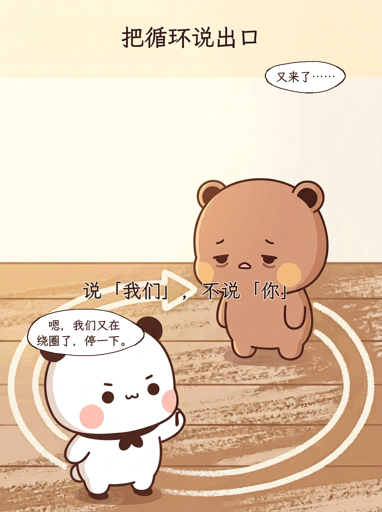
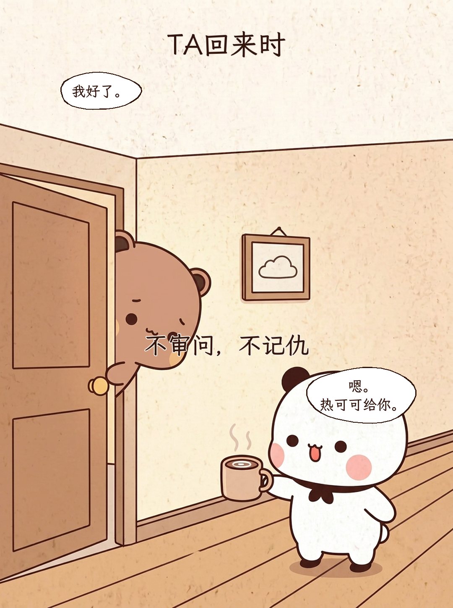
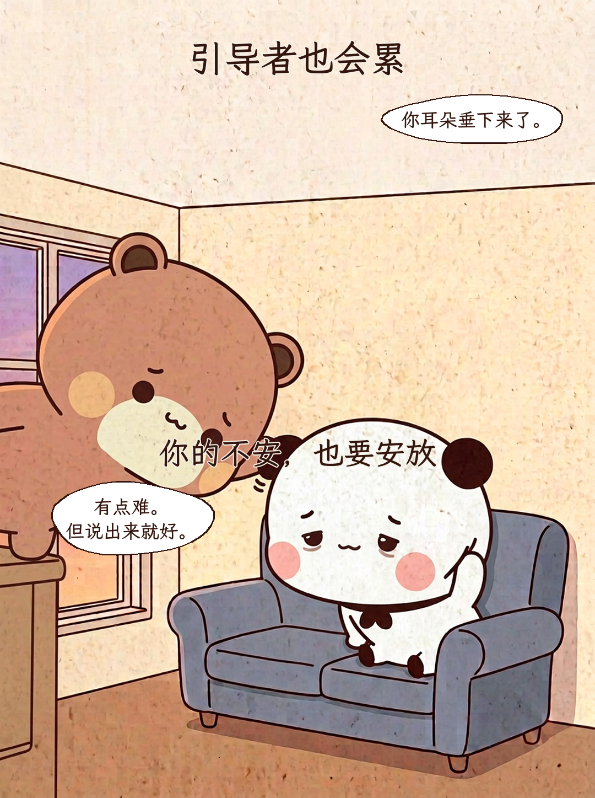
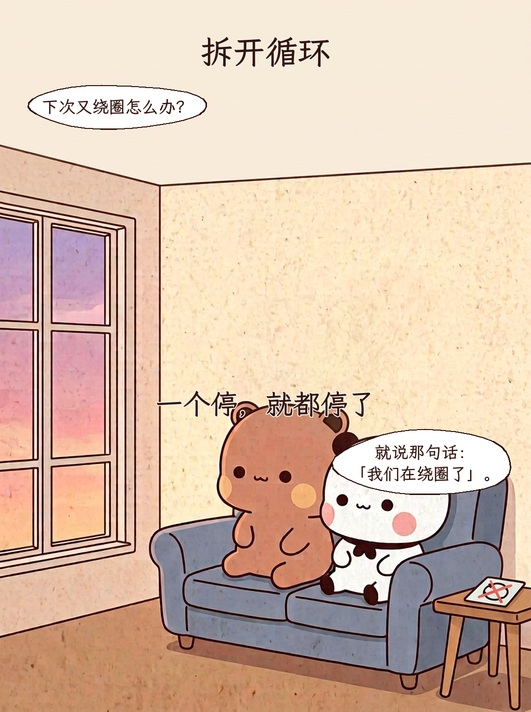

对方撤退时 拆开追逃循环
小熊追得越急，小刺猬缩得越紧

越追越退
追得越紧，退得越远
别跟着我…… / 我不追了， 就在这儿。
停止翻译
沉默，不是在离开
别问了好不好…… / 好。我知道， 你不是在推开我。
降噪模式
先稳自己，再接对方
别说了别说了…… / 好，一起 静六秒钟。
只问一遍
追问是压力，不是关心
走吧，别管我。 / 我只问一遍： 想说的时候，我在。
退一步
退出追，不退出关系
我要回房间了。 / 好。我不走远， 就在客厅。
把循环说出口
说「我们」，不说「你」
又来了…… / 嗯，我们又在 绕圈了，停一下。
TA回来时
不审问，不记仇
我好了。 / 嗯。 热可可给你。
引导者也会累
你的不安，也要安放
你耳朵垂下来了。 / 有点难。 但说出来就好。
拆开循环
一个停，就都停了
下次又绕圈怎么办？ / 就说那句话： 「我们在绕圈了」。